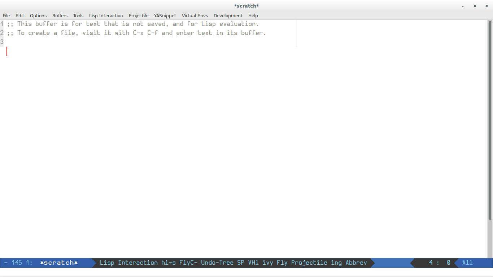

Emacs: Getting Started
1. About Emacs
Emacs is a GNU project. Quoting from its website:
An extensible, customizable, free/libre text editor — and more. At its core is an interpreter for Emacs Lisp, a dialect of the Lisp programming language with extensions to support text editing.
- text editor: It can be treated as a normal text editor. Agreed, using key combinations would be a little hassle initially, but it will pay in long run
- customizable: We may customize it to our taste; theme, adding desired packages from central repository and customizing them etc.
- extensible: we may write our own packages and use them. In which language? Emacs Lisp. Good news is that you would make most of Emacs without diving into the details of it
2. Why Emacs?
Writing neat code, meeting standards, is mandatory for easier reading and code reviews. Remember, code is read more than being written. Spending time on aesthetics of code, though desired, is not feasible for a programmer when one is going through the time crunch of delivery. So, it is desirable to have a development platform which can provide seem-less aide to the developer. Not just this, the development platform should enable developer with advanced editing capabilities, code browsing and assistance with language constructs.
Language specific IDEs (Integrated Development Environment) exist and some of them also provide plugins for other languages support. What these IDEs lack is advanced editing capabilities, and, as a programmer we just don't code for a specific language. We have to switch projects, do porting and even write documentation. Also, anything the way it is delivered doesn't suit the tastes of all. So, we need user specific customization. Emacs and vi are two such editors which have been catering to all these requirements for decades. They still shine out because of their dynamic design and both are backed up by a strong community of contributors.
So, if you are looking for a true programming platform, it is either Emacs or vi. I won't go into the debate of which one is better. My personal choice is Emacs.
3. Learning Resources
There are many resources available but I would recommend to take a guided tour of Emacs from official website. This will give you some ideas of its features.
Emacs mini manual by Tu Do is a good read once you have acquainted yourself with Emacs a bit.
Then, there are some notable resources for the things we need off and on:
- Emacs Rocks! indeed
- emacs-fu
- Mastering Emacs
4. Installation
The latest version on Emacs is 26.1. It is better to use the latest version to
leverage the latest packages.
If you are using a GNU/Linux distribution, chances are that you already have Emacs as a part of it. But, most likely it won't be latest. So, you will have to build from Source. Here are the installation steps from Tu Do's tutorial. You may browse web for any issues you face or you may also write to me.
5. Configuration
Default/Vanilla Emacs is fine but adding customizations (libraries, commands etc.) makes it more fun to use. So, users develop their own set of Emacs configuration. I have my own emacs configuration too: not strictly mine as it has been borrowed from many. But, it suites my taste.
- Clone the repository in your home dir as:
$ git clone git@github.com:sdsays/emacsd-gv.git .emacs.d
- Edit ~/.emacs.d/gv/gv-user.el accordingly
- That't! Launch Emacs. It will fetch all the required packages from (M)ELPA and install them

Figure 1: Emacs start up screen
6. Getting Started Command Set
- Keys Short cuts:
C: CtrlM: Alt/MetaSPC: Space barRET: Return/Enter
- Where we edit text, is called Emacs buffer which can be saved to a file
- Emacs has a mini buffer, in the bottom where you type commands (with args)
C-<key>-means you to have to pressCand<key>togetherC-<key1> <key2>" "(space) means you have to release previous keys and press <key2> separately
| Command | Description |
|---|---|
| C-x-f <myfile> | Find/open a myfile in buffer. You may type few chars and it will match file, then press RET |
| C-x-s | Save buffer to file |
| C-f | Move forward one char or right arrow key |
| C-b | Move backward one char or left arrow key |
| C-p | Move to previous line or up arrow key |
| C-n | Move to next line or down arrow key |
| M-f | Move forward one word |
| M-b | Move backward one word |
| C-a | Move to beginning of line |
| C-e | Move to end of line |
| M-a | Move to beginning of sentence |
| M-e | Move to end of sentence |
| C-v | Move forward one screenful |
| M-v | Move backward one screenful |
| C-l | Moves cursor location to middle, top, bottom on multiple presses |
| M-< | Move to beginning of buffer |
| M-> | Move to end of buffer |
| M-g-g <linenum> | go to line no. line_num |
| C-d | delete char at cursor |
| M-d | delete word starting from cursor |
| C-w | delete current line or selected region with C-s |
| M-w | copy current line or selected region with C-s |
| M-c | duplicate current line just next to current line |
| C-SPC | Starts the selection->move with movement commands->delete/copy region |
| C-u <count> <command> | Command is repeated count no. of times. e.g. C-u 16 C-n moves forward 16 lines |
| C-s <word> | Search word forward in buffer |
| C-r <word> | Search word backward in buffer |
| M-n | Search symbol at point forward |
| M-p | Search symbol at point backward |
Initially, things might look difficult but if we start and practice, it becomes a habit.
In future articles, we will learn about advanced editing, using Emacs for various programming languages, project management and using Emacs Org Mode.